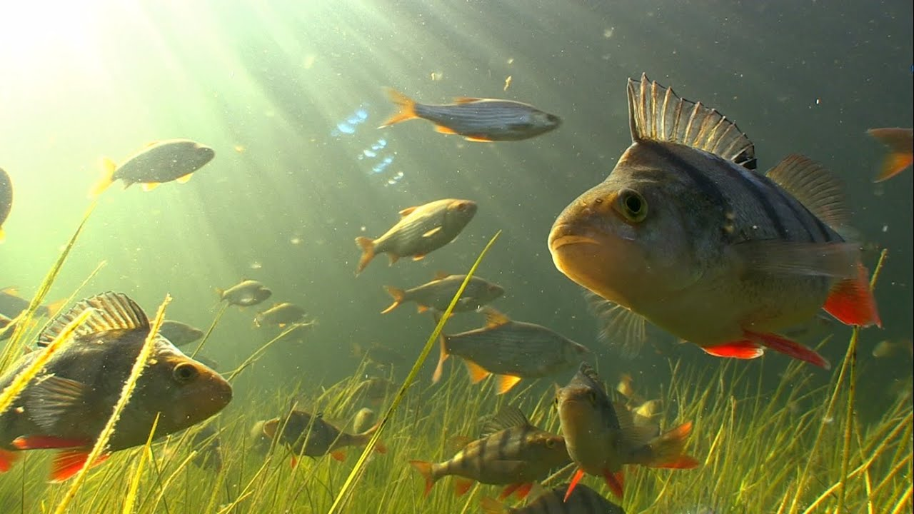

Большинство видов рода обитают на юге Китая и в Юго-Восточной Азии. Исключение составляют два вида. Первый — обыкновенный сазан (Cyprinus carpio), имевший естественный ареал, состоявший из двух частей: водоемы Понто-Каспийско-Аральского и дальневосточного регионов[1]. Он был расселён в водоёмах Северной Америки, Австралии и Евразии за пределами естественного ареала, одомашнен, из него выведены породы карпа, разводимые в прудах. Второй — серебристый карп, завезенный в 1970-е годы в Канаду и США из озера Балхаш (Казахстан) и сильно размножившийся в отсутствие внешних врагов и отлова (из-за обилия костей американцы его не едят). В случае попадания серебристого карпа в Великие озера это грозит уничтожением промысловых рыб местных пород и исчезновением промыслового рыболовства, поэтому на Чикагском канале построен электрический барьер
рыба семейства щуковых. Распространена в пресных водах Евразии и Северной Америки. Живёт обычно в прибрежной зоне, в водных зарослях, в непроточных или слабопроточных водах. Может также встречаться и в опреснённых частях морей, например в Финском, Рижском и Куршском заливах Балтийского моря, в Таганрогском заливе Азовского моря. Щука хорошо выдерживает кислую реакцию воды, может комфортно жить в водоёмах с pH 4,75. При снижении содержания кислорода до 3—2 мг/л наступает угнетение дыхания, поэтому в заморных водоёмах щука часто погибает.

Форель тесно связана с лососем и имеет схожий миграционный жизненный цикл. Большинство видов форели являются строго потамодромными, то есть проводят всю свою жизнь исключительно в пресноводных озёрах, реках и водно-болотных угодьях и мигрируют вверх по течению для нереста на мелководных гравийных участках небольших ручьёв. Вылупившиеся мальки и молодь форели, известные как алевтины и парры, остаются в верховьях и растут в течение нескольких лет, прежде чем мигрировать в более крупные водоёмы в качестве взрослых особей. Некоторые анадромные виды форели, такие как стальноголовый лосось (прибрежный подвид радужной форели) и морская форель (морской подвид кумжи), могут проводить в море до трёх лет своей взрослой жизни, прежде чем вернуться в пресноводные реки для нереста, как и лосось. Ручьевая форель и три других существующих вида североамериканской форели, несмотря на названия, на самом деле являются гольцами (или хариусами), которые также относятся к лососевым и тесно связаны с форелью и лососем. Форель относится к жирным видам рыб[1] и является важным промысловым видом для человека. Будучи хищниками среднего размера, форели охотятся на более мелких водных животных, включая ракообразных, насекомых, червей, мелкую рыбу и головастиков, а сами, в свою очередь, являются важной добычей для многих диких животных, включая бурых медведей, выдр, енотов, хищных птиц (например, орланов-белохвостов, скоп, рыбных филинов), чаек, бакланов и зимородков, а также других крупных водных хищников. Выброшенные на берег останки форели также служат источником питательных веществ для падальщиков, детритофагов и прибрежной флоры, что делает форель ключевым видом в водных и наземных экосистемах.
вид лучепёрых рыб из рода пресноводных окуней семейства окунёвых (Percidae). Речной окунь широко распространён в пресных водоёмах Европы и Северной Азии (до бассейна Колымы на востоке и водоёмов северных районов Ирана и Афганистана на юге), завезён в Африку, Австралию и Новую Зеландию. Ранее считалось, что ареал речного окуня включает и водоёмы Северной Америки, которые по современным представлениям населяет самостоятельный вид жёлтый окунь (Perca flavescens). Речной окунь относится к хищным рыбам. В рационе взрослого окуня значительную долю занимают другие пресноводные рыбы. Речной окунь предпочитает придерживаться равнинных водоёмов, его можно встретить в реках, озёрах, прудах, водохранилищах и даже в солоноватых участках морей. Нерест у речного окуня происходит ранней весной. Самка окуня откладывает икринки в форме длинной (до 1 м) студенистой ленты. Окунь — популярный объект любительского рыболовства, в отдельных водоёмах имеет важное промысловое значение.
